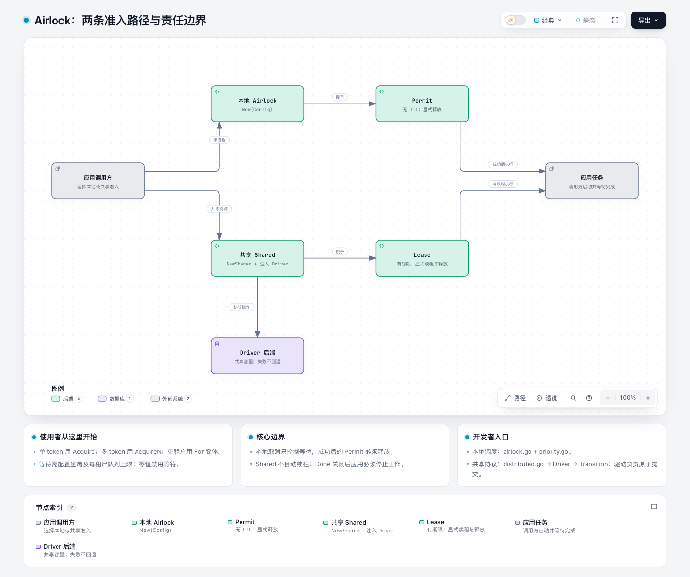
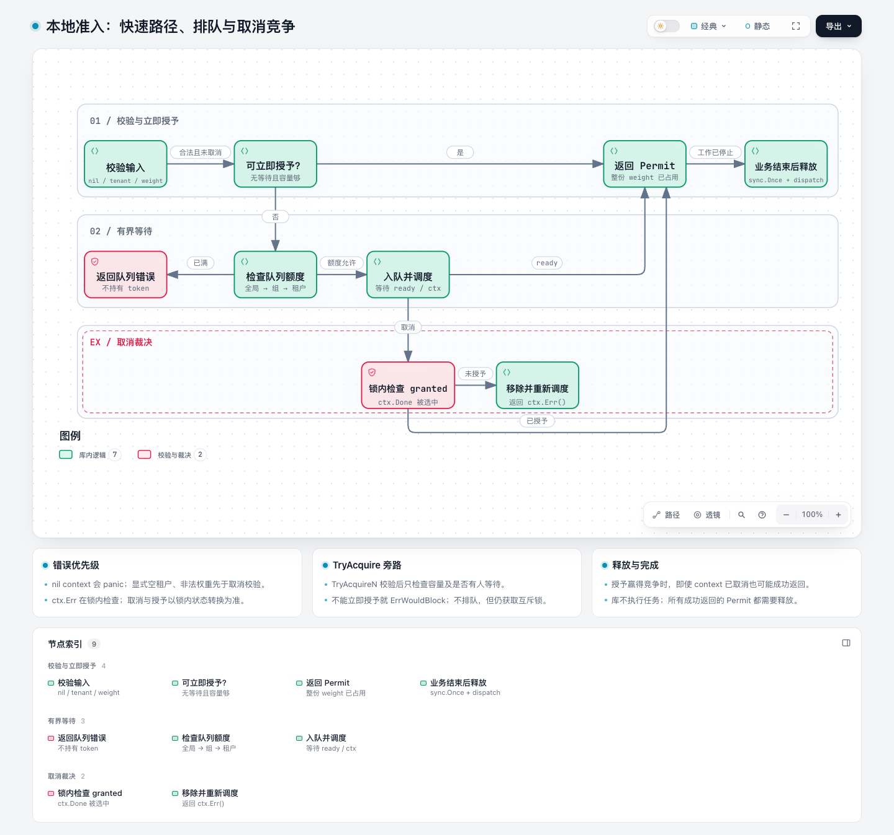
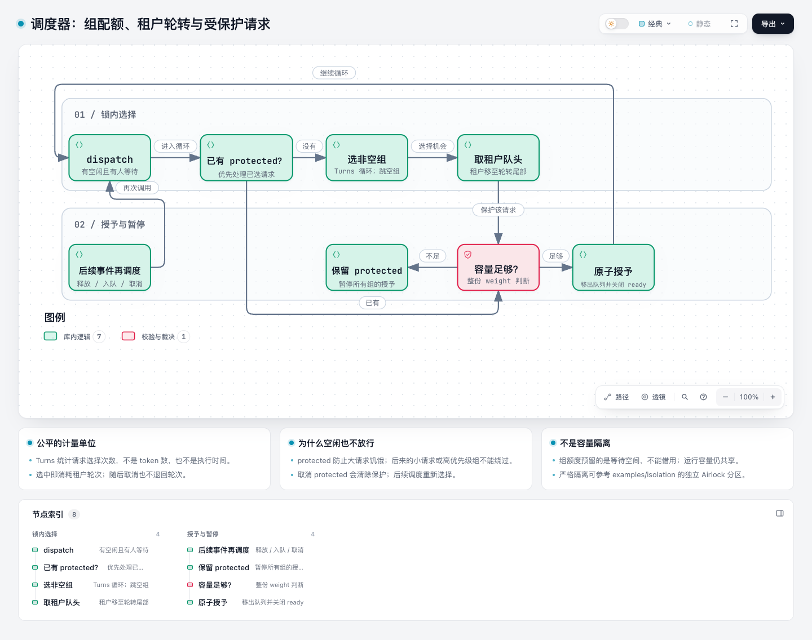
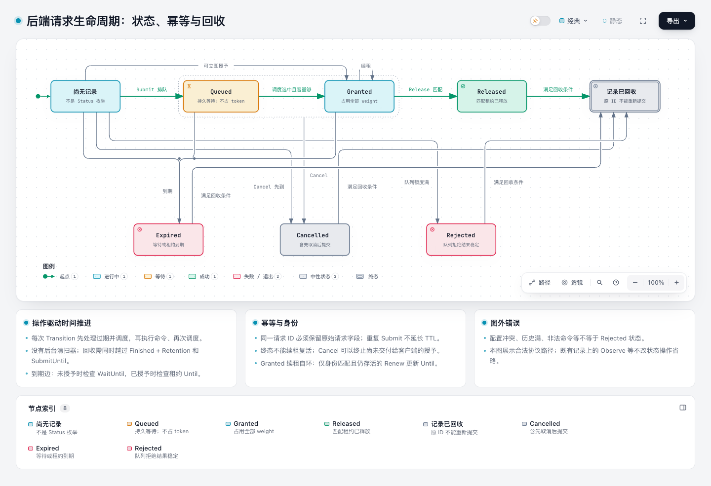
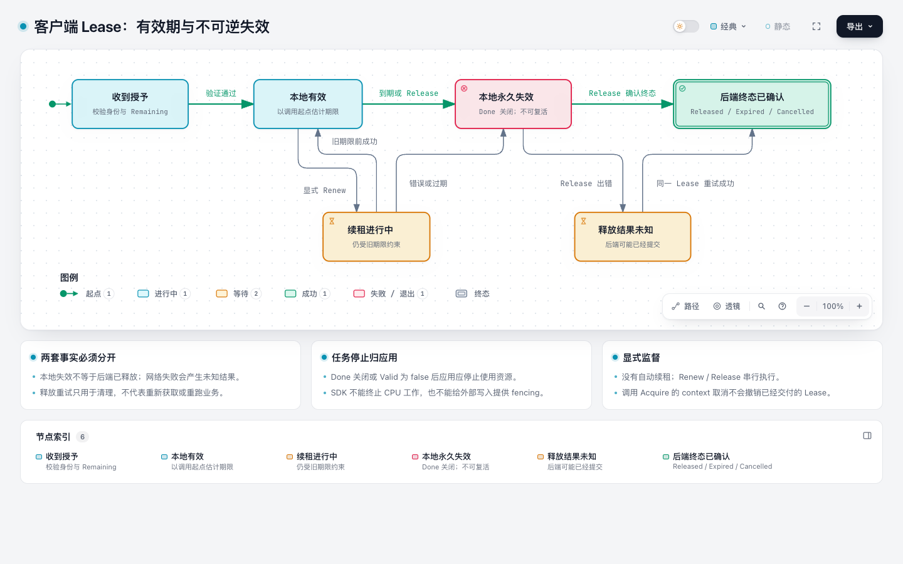
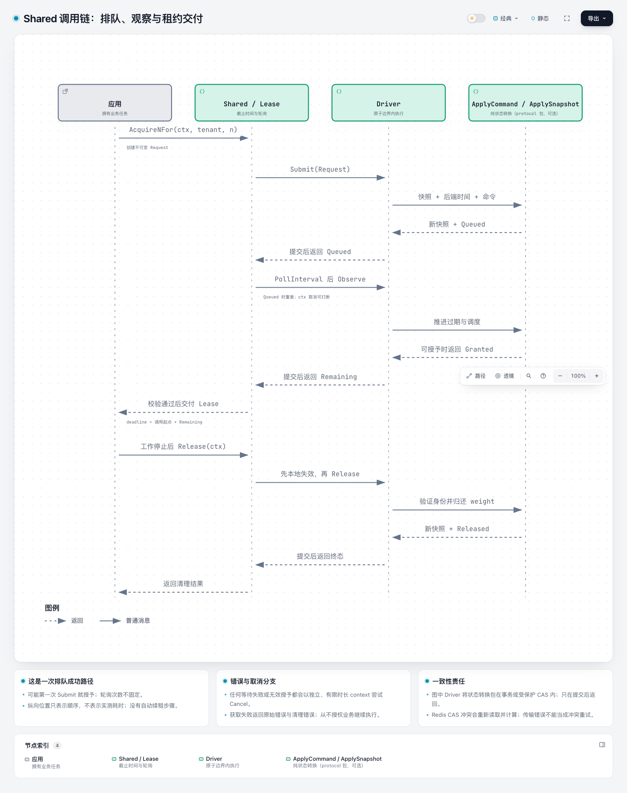
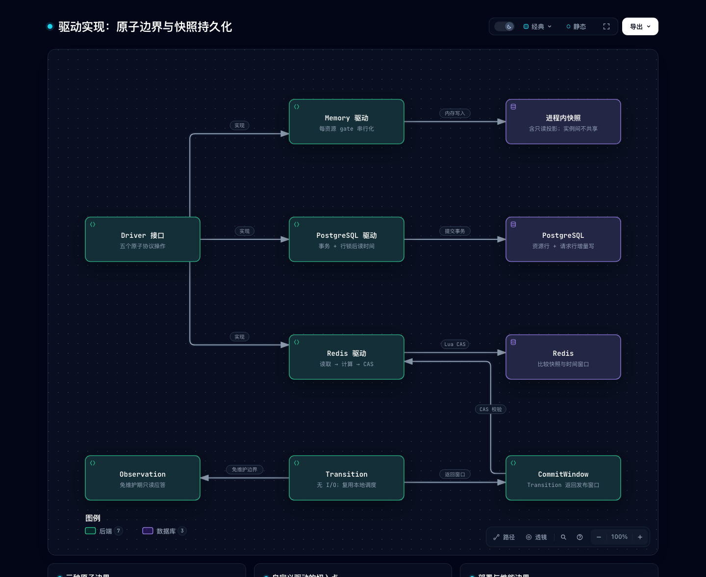
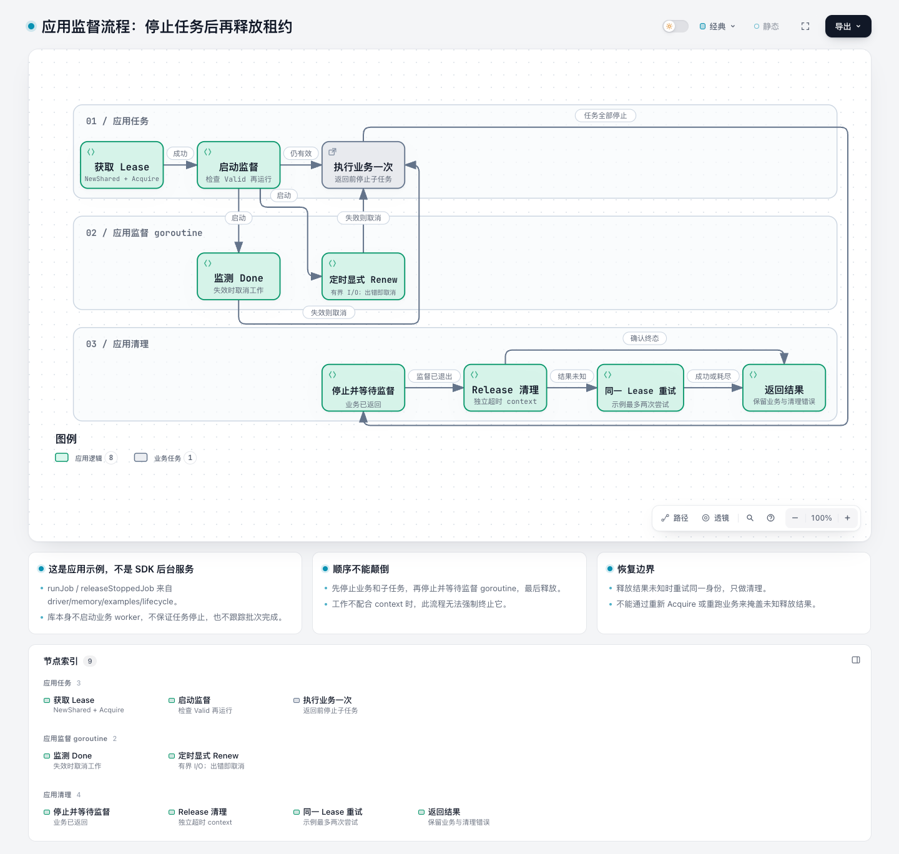

先选准入范围，再理解等待与释放，最后深入状态机和后端。8 张源码支撑的图，连接使用方式、运行机制和开发入口。
使用者 01 → 02；使用共享容量时继续 05 → 08。
初学者 01 → 02 → 03，再看 04–06 的共享协议。
开发者 03 → 04 → 07，并查导读中的源码与测试入口。

从 New 还是 NewShared 开始？谁执行任务？
Runtime overview

为什么申请失败？取消与授予同时发生怎么办？
Local admission and cancellation

为什么还有空闲 token 却不能放行？
Fair scheduling and protected heads

哪些状态能续租、取消和回收？
Authoritative request lifecycle

本地失效是否代表后端已经释放？
Client lease lifecycle

排队后是谁推进状态？何时才能运行任务？
Shared request sequence

自定义驱动必须在哪里保证原子性？
Driver atomicity and persistence

任务、续租和释放应该按什么顺序停止？
Application-owned supervision